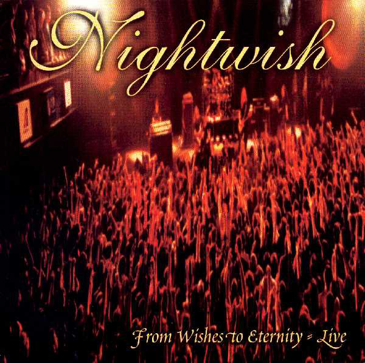
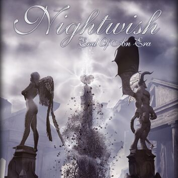
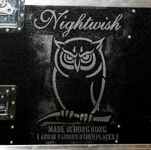
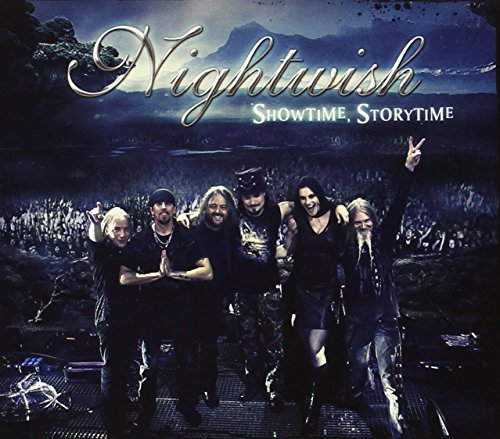
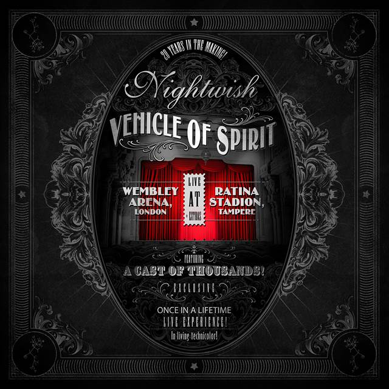

Live Albums
From Wishes to Eternity
Track list:
1. "The Kinslayer"2. "She Is My Sin"
3. "Deep Silent Complete"
4. "The Pharaoh Sails to Orion"
5. "Come Cover Me"
6. "Wanderlust"
7. "Crimson Tide/Deep Blue Sea"
8. "Swanheart"
9. "Elvenpath"
10. "FantasMic (Part 3)"
11. "Dead Boy's Poem"
12. "Sacrament of Wilderness"
13. "Walking in the Air"
14. "Beauty & the Beast"
15. "Wishmaster"
11. "Dead Boy's Poem"
12. "Sacrament of Wilderness"
13. "Walking in the Air"
14. "Beauty & the Beast"
15. "Wishmaster"

End of an Era
Track list:
1. "Red Warrior" / "Dark Chest of Wonders" 5:082. "Planet Hell" 4:45
3. "Ever Dream" 4:45
4. "The Kinslayer" 4:09
5. "The Phantom of the Opera" 5:12
6. "The Siren" 4:53
7. "Sleeping Sun" 4:55
8. "High Hopes" 6:54
9. "Bless the Child" 6:25
10. "Wishmaster" 4:44
11. "Slaying the Dreamer" 4:44
12. "Kuolema Tekee Taiteilijan" 4:13
13. "Nemo" 4:46
14. "Ghost Love Score" 10:29
15. "Stone People" 4:09
16. "Creek Mary's Blood" 8:39
17. "Over the Hills and Far Away" 5:26
18. "Wish I Had an Angel" / "All of Them" 7:52
11. "Slaying the Dreamer" 4:44
12. "Kuolema Tekee Taiteilijan" 4:13
13. "Nemo" 4:46
14. "Ghost Love Score" 10:29
15. "Stone People" 4:09
16. "Creek Mary's Blood" 8:39
17. "Over the Hills and Far Away" 5:26
18. "Wish I Had an Angel" / "All of Them" 7:52

Made in Hong Kong
Track list:
1. "Bye Bye Beautiful" 4:342. "Whoever Brings the Night" 4:24
3. "Amaranth" 4:17
4. "The Poet and the Pendulum" 13:59
5. "Sahara" 6:10
6. "The Islander" 5:25
7. "Last of the Wilds" 6:31
8. "7 Days to the Wolves" 7:17
9. "Escapist" 4:59
10. "While Your Lips Are Still Red" 4:18
11. "Cadence of Her Last Breath" (Demo) 4:14
11. "Cadence of Her Last Breath" (Demo) 4:14

Showtime, Storytime
Track list:
1. "Dark Chest of Wonders" 4:332. "Wish I Had an Angel" 4:49
3. "She Is My Sin" 4:55
4. "Ghost River" 6:05
5. "Ever Dream" 5:21
6. "Storytime" 5:38
7. "I Want My Tears Back" 6:44
8. "Nemo" 4:45
9. "Last of the Wilds" 6:32
10. "Bless the Child" 7:06
11. "Romanticide" (music: Holopainen, Marco Hietala) 5:40
12. "Amaranth" 4:26
13. "Ghost Love Score" 10:31
14. "Song of Myself" 7:53
15. "Last Ride of the Day" 4:34
16. "Outro: Imaginaerum" 6:16
11. "Romanticide" (music: Holopainen, Marco Hietala) 5:40
12. "Amaranth" 4:26
13. "Ghost Love Score" 10:31
14. "Song of Myself" 7:53
15. "Last Ride of the Day" 4:34
16. "Outro: Imaginaerum" 6:16

Vehicle of Spirit
Track list:
1. "Shudder Before the Beautiful" 6:582. "Yours Is an Empty Hope" 5:47
3. "Ever Dream" 4:10
4. "Storytime" 4:52
5. "My Walden" 5:15
6. "While Your Lips Are Still Red" 5:05
7. "Élan" 4:27
8. "Weak Fantasy" 6:19
9. "7 Days to the Wolves" 7:16
10. "Alpenglow"4:56
11. "The Poet and the Pendulum" 14:00
12. "Nemo" 4:53
13. "I Want My Tears Back" 7:13
14. "Stargazers" 5:11
15. "Ghost Love Score" 10:36
16. "Last Ride of the Day" 4:58
17. "The Greatest Show on Earth" (feat. Richard Dawkins) 22:37
11. "The Poet and the Pendulum" 14:00
12. "Nemo" 4:53
13. "I Want My Tears Back" 7:13
14. "Stargazers" 5:11
15. "Ghost Love Score" 10:36
16. "Last Ride of the Day" 4:58
17. "The Greatest Show on Earth" (feat. Richard Dawkins) 22:37
